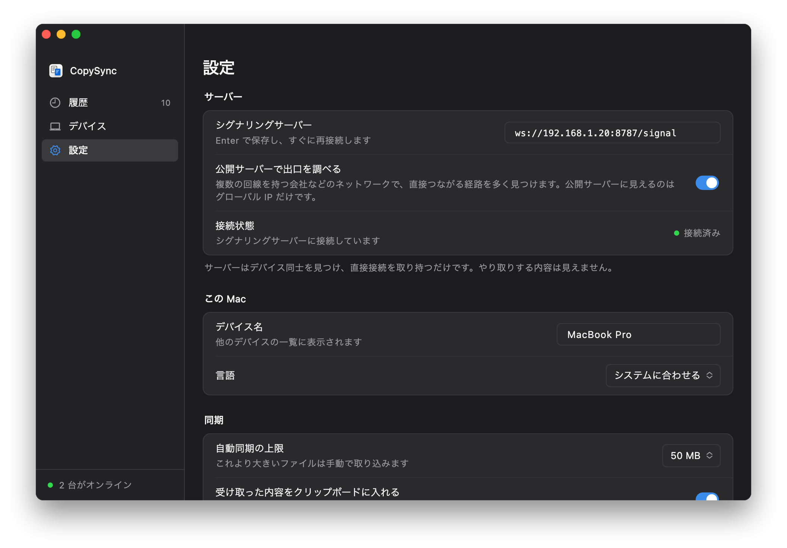

サーバーは引き合わせるだけ
各コンピューターはサーバーにつながったままで、それを通じて相手を見つけ、接続情報を交換します。つながったあと、コピーした内容は 2 台のあいだを直接流れます。直接つながらないときだけサーバーを中継し、その場合も暗号化されたままです。
- シグナリング、TCP 8787。各コンピューターが常に接続し、相手の発見、ペアリング、接続情報の交換に使います。
- 直接接続。LAN 内ではほぼ必ず 2 台のあいだで直接やりとりし、速度は LAN の速度そのままです。
- 中継、UDP 3478。ゲストネットワーク、AP アイソレーションが有効な Wi‑Fi、別のサブネットなど、互いに届かないときだけ使います。
始める前に
- 電源を入れたままのコンピューター
- Windows 10・11、macOS 13 以降、または Linux なら何でも可。同期する 2 台のうちの 1 台でもかまいません。電源が切れたりスリープしたりすると同期は止まり、復帰すると再開します。NAS、ルーター、Mac mini などが最適で、メモリは約 15 MB です。
- 固定のアドレス
- ルーターの DHCP 設定（「固定割り当て」「アドレス予約」など）で、このコンピューターのアドレスを固定します。そうしないと、アドレスが変わるたびに全部のコンピューターで入れ直すことになります。
- 同じネットワークに
- 同じ Wi‑Fi か有線ネットワークにつながっていれば十分です。ゲストネットワークや AP アイソレーションが有効な Wi‑Fi ではデバイスどうしが通信できないので、別のネットワークを使うか、アイソレーションをオフにしてください。
- ネットワークの外では同期しない
- サーバーには LAN の中からしか届きません。持ち出したノートパソコンは、戻ってきてから同期を再開します。どこからでも同期したい場合は、グローバル IP を持つサーバーが必要です（トップページの「インストール」）。
サーバーをインストール
サーバーを動かすコンピューターの OS を選んでください。スクリプトが LAN のアドレスを見つけ、サーバーを自動起動に設定し、最後にアプリへ入力するアドレスを表示します。
Windows
- copysync-server-windows-amd64.zip をダウンロードし、右クリックで「すべて展開」します。
- 展開したフォルダーを開き、
install.cmdをダブルクリックします。「Windows によって PC が保護されました」と出たら「詳細情報」から「実行」を、ユーザーアカウント制御が出たら「はい」を押します。サーバーはまだコード署名していないため、一度だけ確認されます。 - インストールは新しく開くウィンドウで進みます。最後に表示される
ws://…/signalがアプリに入力するアドレスです。
- Windows サービスとして動作：Windows の起動とともに立ち上がり、サインイン不要で、ウィンドウも出ません。「サービス」では CopySync Server と表示されます。
- ファイアウォールは設定済み：copysync-server.exe だけを対象にした受信規則をスクリプトが追加するので、ポートを開ける必要はありません。
- アドレスが違うものになった（仮想マシンや VPN でネットワークアダプターが複数あるなど）：展開したフォルダーのアドレスバーに
cmdと入力して Enter を押し、install.cmd 192.168.1.20のようにアドレスを指定して実行します。 - Windows 10・11、x64 に対応。
- copysync-server.exe
- install.cmdダブルクリック
- install.ps1
- README.md
- uninstall.cmd
> Stopping the running version > Installing to C:\Program Files\CopySync Server > Registering the service CopySyncServer (relay address 192.168.1.20) > Allowing it through Windows Firewall > Starting √ Running Installed: copysync-server 1.3.3. It runs as a Windows service and starts with Windows. In CopySync on each computer, set Settings > Signaling server to: ws://192.168.1.20:8787/signal Program C:\Program Files\CopySync Server Logs C:\ProgramData\CopySync Server\server.log Restart Restart-Service CopySyncServer (in an administrator PowerShell) Uninstall double-click uninstall.cmd
| 状態 | 管理者の PowerShell で Get-Service CopySyncServer、または「サービス」で CopySync Server を確認 |
|---|---|
| ログ | C:\ProgramData\CopySync Server\server.log |
| 再起動 | 管理者の PowerShell で Restart-Service CopySyncServer |
| 更新 | 新しいバージョンをダウンロードして展開し、もう一度 install.cmd をダブルクリック。設定は引き継がれます |
| アンインストール | uninstall.cmd をダブルクリック。サービス、ファイアウォール規則、ファイルをすべて削除します |
macOS
- 「ターミナル」を開き、次の行を順に実行します：
curl -LO https://github.com/baiyuze/copysync/releases/latest/download/copysync-server-macos.tar.gz tar xzf copysync-server-macos.tar.gz cd copysync-server-macos ./install.sh - 最後に表示される
ws://…/signalがアプリに入力するアドレスです。
- 管理者権限は不要です。ログインしているあいだバックグラウンドで動き、終了しても macOS が再起動します。
- この Mac はスリープさせないでください：「システム設定 → エネルギー」（ノートは「バッテリー → オプション」）で自動スリープを防ぐ項目をオンにします。
- macOS のファイアウォールがオンなら、スクリプトの最後に copysync-server を許可するコマンドが表示されます。
- Intel と Apple シリコンの両方に対応、macOS 13 以降。
% ./install.sh ▶ Stopping the running version ▶ Installing to /Users/me/Library/Application Support/CopySync Server ▶ Writing the LaunchAgent (relay address 192.168.1.20) ▶ Starting ✓ Running Installed: copysync-server 1.3.3. It starts whenever you log in to this Mac. In CopySync on each computer, set Settings → Signaling server to: ws://192.168.1.20:8787/signal Logs /Users/me/Library/Logs/CopySync/server.log Restart launchctl kickstart -k gui/501/com.copysync.server Uninstall ./install.sh uninstall
| ログ | ~/Library/Logs/CopySync/server.log |
|---|---|
| 再起動 | launchctl kickstart -k gui/$(id -u)/com.copysync.server |
| 更新 | 新しいバージョンをダウンロードして展開し、もう一度 ./install.sh を実行。設定は引き継がれます |
| アンインストール | ./install.sh uninstall |
Linux
- そのマシン上で（または ssh でログインして）次の行を順に実行します：ARM（64 ビット OS の Raspberry Pi など）では
amd64をarm64に置き換えます。curl -LO https://github.com/baiyuze/copysync/releases/latest/download/copysync-server-linux-amd64.tar.gz tar xzf copysync-server-linux-amd64.tar.gz cd copysync-server-linux-amd64 sudo ./install.sh - 最後に表示される
ws://…/signalがアプリに入力するアドレスです。
- systemd サービスとして登録され、起動時に立ち上がります。root 権限が必要です。
- ufw や firewalld が有効なら、スクリプトの最後にポートを開けるコマンドが表示されます。
- Docker でも動かせます：
env.exampleを.envにコピーし、TURN_IPにこのマシンの LAN アドレスを入れてdocker compose up -dを実行します。ホストネットワークが必要なので Linux 専用です。
$ sudo ./install.sh ▶ Installing the binary to /usr/local/bin ▶ Writing the systemd unit ▶ Writing /etc/copysync/server.env (relay address 192.168.1.20) ▶ Starting ✓ Running Installed: copysync-server 1.3.3 In CopySync on each computer, set Settings → Signaling server to: ws://192.168.1.20:8787/signal Config /etc/copysync/server.env Logs journalctl -u copysync-server -f Restart systemctl restart copysync-server Uninstall sudo ./install.sh uninstall Open in your firewall: TCP 8787 (signaling), UDP 3478 (STUN and TURN), UDP 32768-60999 (relay ports, assigned by the OS)
| 状態 | systemctl status copysync-server |
|---|---|
| ログ | journalctl -u copysync-server -f |
| 再起動 | sudo systemctl restart copysync-server |
| 設定 | /etc/copysync/server.env。編集したらサービスを再起動 |
| 更新 | 新しいバージョンをダウンロードして展開し、もう一度 sudo ./install.sh を実行。設定は引き継がれます |
| アンインストール | sudo ./install.sh uninstall |
ほかのコンピューターから届くか確認
別のコンピューターのブラウザーで http://192.168.1.20:8787/healthz（あなたのアドレスに置き換え）を開きます。次の 1 行が表示されれば、ネットワークはつながっています。
{"status":"ok","version":"1.3.3"}
開けない場合は、下のよくある質問をご覧ください。
各コンピューターにアドレスを入力
設定を開く
各コンピューターで CopySync を開き、「設定」に進みます。サーバーを動かしているコンピューターも同じです。
アドレスを入力
「シグナリングサーバー」に
ws://192.168.1.20:8787/signal（あなたのアドレス）を入力し、Return か Enter を押します。状態を確認
「接続状態」が緑の「接続済み」になれば完了です。「デバイス」でペアリングすれば、コピーが同期されるようになります。

アプリがまだなら、トップページのインストールをご覧ください。
よくある質問
接続状態が「未接続」のまま
まずアドレスを確認します。ws:// で始まり、ポートは 8787、末尾は /signal、入力後に Return を押しているか。
次に、そのコンピューターのブラウザーで http://サーバーのアドレス:8787/healthz を開きます。開けなければネットワークの経路の問題です。サーバーが動いていない、そのコンピューターがスリープしている、ファイアウォールに止められている、アドレスが変わった、のいずれかです。
Windows のスクリプトはファイアウォールを設定済みです。Mac でファイアウォールがオンなら、スクリプトの最後に表示されたコマンドを実行してください。Linux の ufw、firewalld も同様です。
デバイスが「直接」ではなく「中継」になる
LAN 内ではほとんどの場合直接つながります。中継になるのは 2 台のあいだで UDP が通らないからで、ゲストネットワーク、Wi‑Fi の AP アイソレーション、ファイアウォールを挟んだ別のサブネットなどが原因です。中継でも内容は暗号化されたままで、速度がサーバー側のネットワークに左右されるだけです。
サーバーのアドレスが変わった
新しいアドレスを付けてスクリプトをもう一度実行します。Windows は install.cmd 新しいアドレス、Mac は ./install.sh 新しいアドレス。Linux では /etc/copysync/server.env の -turn-ip を書き換えてサービスを再起動します。そのあと各コンピューターのアドレスも変更してください。
ルーターでアドレスを固定しておけば、こうしたことは起きません。
LAN の外でも同期できますか？
できません。サーバーには LAN の中からしか届かないためです。どこでも使いたい場合は、グローバル IP を持つマシンにサーバーを置くか（トップページの「インストール」）、Tailscale や ZeroTier などでデバイスを同じ仮想ネットワークに参加させ、その中でのサーバーのアドレスを入力します。
中国本土のクラウドサーバーで、ドメインではつながらず IP ならつながる
ICP 登録（备案）のないドメインへの平文 HTTP リクエストは、中国本土のクラウド事業者に横取りされ、ブロックページへのリダイレクトが返されます。テストでは 8787 のような一般的でないポートでも同じでした。WebSocket のハンドシェイクも HTTP リクエストなので同じく止められ、アプリは未接続になります。
アドレスには ws://サーバーのIP:8787/signal のように IP を直接入力するか、ドメインを登録してください。
サーバーを動かすコンピューターでも CopySync を使う場合のアドレスは？
同じ LAN のアドレスで大丈夫です。ws://127.0.0.1:8787/signal でもかまいません。サーバーとアプリは互いに影響しません。
電源を入れたままの
コンピューターが 1 台あれば十分。
バージョン 1.3.3、無料・オープンソース。macOS 13 以降（Intel と Apple シリコン）、Windows 10・11。
サーバーの詳しい構築手順（グローバル IP、Docker を含む、英語・中国語）